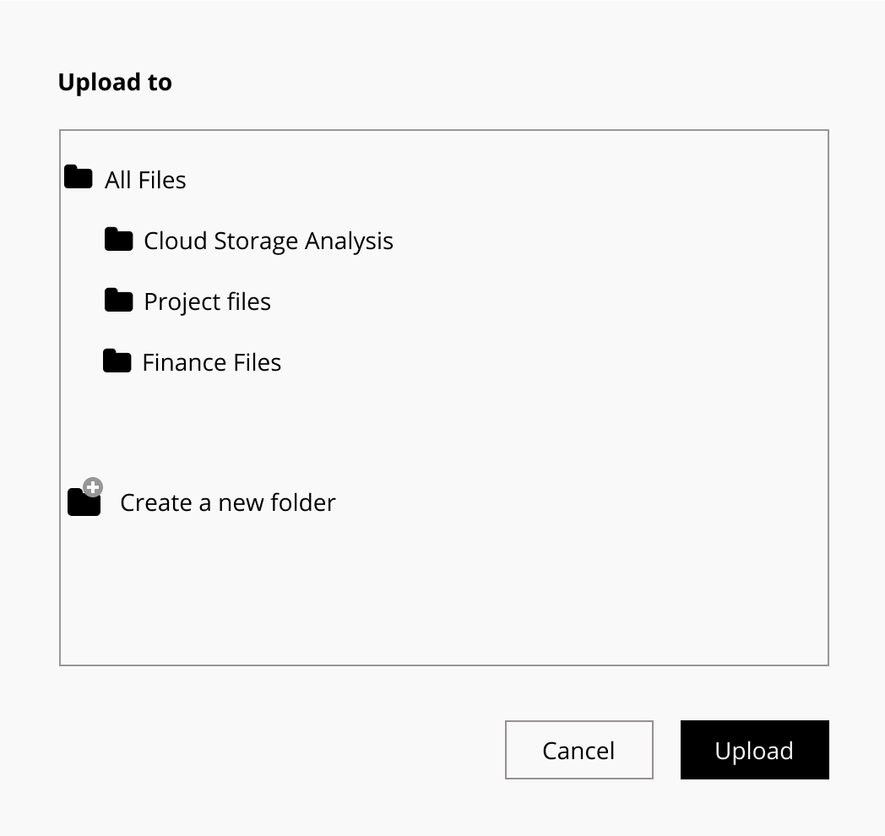
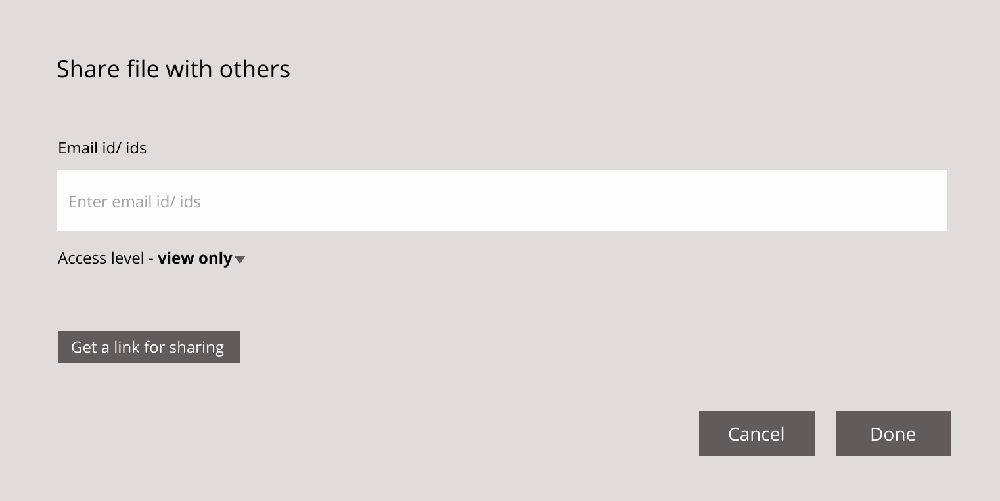
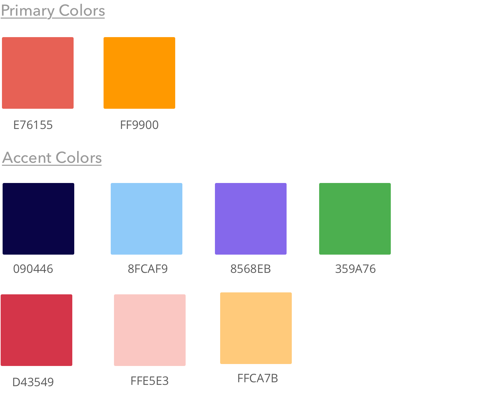
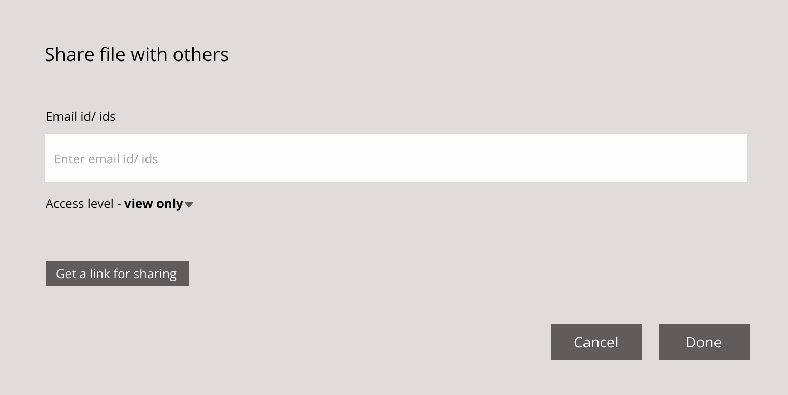
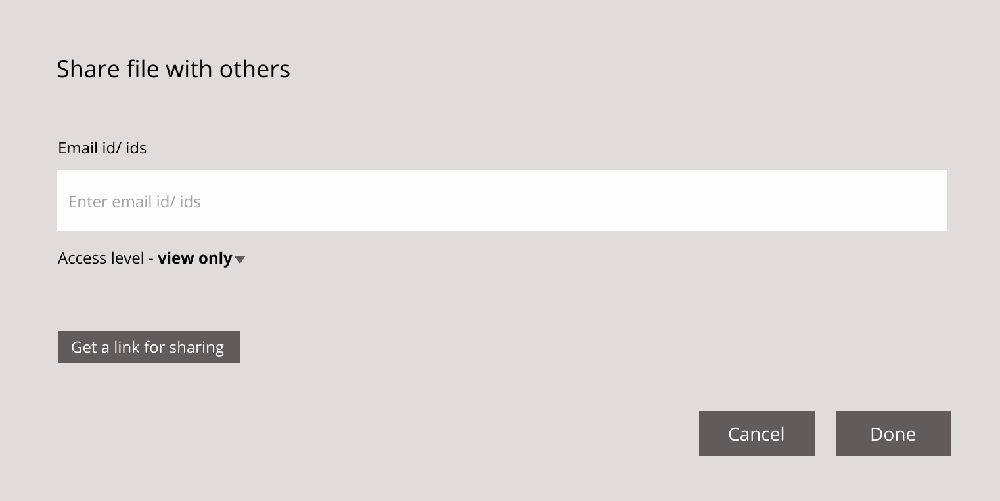

Flono is a cloud storage app
designed to make cloud-related activities in the workplace easier.
Introduction
The cloud storage market is huge with multiple big-name competitors like Google Drive, Dropbox, etc. It is projected that by 2022, more than 72% of the global organizations will migrate to the cloud from on-premise data centers.
But the market is still young and there is scope for a new entrant. The purpose of this project is to identify the right market for a new entrant and design a cloud storage service from scratch with relevant features for that
market.
Problem
Though this market is dominated by big names, Most of these platforms have an unintuitive design . There are many online forums and twitter rants which reflect this issue. When I carried out a survey to find out what users
wanted to see in a new cloud storage product, more than any fancy feature, their main concern was the usability of existing basic features .
Solution
Flono prioritizes usability over everything else. To achieve this, the service is designed to provide an intuitive workflow by focusing on the foundations of intuitive design such as visibility, feedback, constraints, affordance, expectation,
efficiency.
Roles
User Research
Competitive Analysis
User Flows
Content Strategy
Wireframing
Prototyping
Branding & Style Guide
Usability Testing
Tools
Sketch
Figma
Usability Hub
Draw.io
Google forms
Competitive Analysis
The first step was to analyze the market to evaluate current options and find out opportunities to enter this space.
I chose three main players in the market for this purpose - Google drive, Dropbox, Box.
Google Drive
Provides 15 GB of free storage
Native productivity apps are very popular
Advanced features For e.g Search using many parameters
Easy to recover files
Unintuitive design
Visual layout is cluttered
Dropbox
The most reviewed app
Good visual layout
AI-powered suggestions
Makes collaboration easier
Link expiry and password settings
High price tag
Certain components are cluttered
Box
Intuitive layout
Customization option available
Huge selection of third-party apps
Provides guest accounts
Difficult to sync files
Doesn’t run as fast as competitors
File size restriction of 250 MB
User Survey
I conducted a survey to understand the needs of users. This survey was sent out through social media accounts, subreddits, and friends.
The main purpose of this survey was to answer the following questions:
Ideal target group for a new cloud service product?
How are people using such a service now? and Why?
What features do they use regularly?
What problems can I solve with a new product?
Key Takeaway
The most critical thing that I learned during the survey was more than new features, users are concerned about the usability of basic features
When users were asked what they DO NOT like about their present service, these were their responses.
I didn't know how to create a folder for a long time
Difficult to understand, so I don’t use much
Saved it in the wrong folder and couldn’t find it
One drive wasn’t very intuitive to use
Right click for options wasn’t clear
Couldn’t share a file
All these led to the same problem - Unintuitive Design
Not having an intuitive user flow that helps the user to move from one step to the other without any friction is the concern among cloud storage users
Other Key Points
75% of the users accessed their cloud storage service through larger devices – Desktop, Laptop.
65% use the service for a work-related purpose.
75% chose Uploading a file and Sharing files as their main reasons to use this service at present.
Important features according to users - Uploading content, Organizing content, and Collaboration.
Defining the Solution
Based on the competitive analysis and user survey, I identified the possible characteristics of a new entrant.
A service that’s ideal for workplace-related activities.
Available on larger devices with a mobile app to support the workflow.
Focused on providing an intuitive workflow.
Must have features – Uploading content, Organizing content & Sharing.
User Personas
To understand the user better, I developed two personas based on two clear usage motivations that stood out during the survey.
The uploader - Wants a safe space to upload and organize all the work files.
The collaborator - Wants to quickly share and receive feedback on work files.
Jacob - The Uploader
AGE: 34
Occupation: Scientist
Location: Boston
Gender: Male
He is constantly exporting data from microscopes and prefers to save it all these files in the cloud so that he can save space in his personal system.
Main Goal: To upload files and organize file
Frustration Multiple steps to upload files Forgets to organize files that are uploaded
Ashley - The Collaborator
AGE: 30
Occupation: UX Designer
Location: Atlanta
Gender: Female
The project she is working on is highly collaborative in nature and she shares her daily progress with team members for their feedback.
Main Goal: Share files with team members quickly
Frustration Sharing with multiple people takes time
Difficult to search for items that were uploaded
User Stories
To identify all the necessary features, I listed down what ‘Ashley’ and ‘ Jacob ‘ would want to see in such a service.
From the list, I selected all the high priority user stories and few low & medium priority ones to form the MVP.
Stories
I want to upload files
I want to create new folders
I want to search for files with file name
I want to upload folders
I want to organize uploaded content into various folders
I want to share uploaded files/folders with others from the platform itself
I want to add files to a quick access category
I want to share uploaded files/folders with others using a link
I want to create new notes online
Features for MVP
Upload files
Upload folders
Search
Organize
Share – Email & Link
Create a folder
Create a note
Quick access
User Flows
The next process involved accounting for all the steps a user takes while navigating through various features identified during the last step. I created 8 different user flows to map out the process and to identify the hierarchy of these
elements. The main focus here was to find ways to address the main pain points.
Paper Sketches
I started with paper sketching and once I figured out the flow and placement of various elements, I used Sketch to design wireframes.
Wireframes
Usability Testing
I wanted to test the wireframes at this stage to find out how users will interact with various elements to uncover any issues so that I can iterate and improve before moving forward. Wireframes were tested with 3 people through zoom.
Changes after usability testing
When the user hovers over a file, it gets highlighted along with the actions they could perform with that file. But I learned during the test that the hovering feature was confusing and the users found it difficult to click the ‘Move’ button .
So I decided to remove the hovering option.
Users pointed out that the downward triangle next to the upload button was counter-intuitive.

Users found it difficult to understand the hierarchy of files while moving a file, uploading a new file to a folder, etc. So I redesigned the modal window.

Users found it confusing as there were two buttons ‘Share’ and ‘Done’. I thought it would make it easier for the user to have access to the share button close to the input field. But the test proved otherwise so I decided to get rid of the
‘Share’ button.
Visual Design
Branding direction - A product that’s intuitive and makes the workspace fun & vibrant.
Brand voice will be approachable, vibrant, warm, helpful (Reference - MailChimp).
Through brainstorming, I figured the intended benefits of this service. One that clearly stood out was “Being in the flow”. I tried many variations with ‘FLO’ and decided on flono.

I wanted the primary colors to evoke feelings of passion and energy to align with the vibrant nature of this service. But at the same time, I didn’t want it to be overpowering and in-your-face.
I chose ‘Amarnath’ as the brand typeface as it aligned with the casual and approachable brand voice of this service. I paired it with ‘Open Sans’ to provide great clarity & readability at any font size and this will help
users to easily consume the content.
Preference Test
I conducted a preference test for a few visual elements before finalizing the design. Following were the three elements that I tested.
Sign Up Button
Active State for a file
Notification Alert
Sign Up button
Participants didn’t exhibit a strong preference for one over another. Decided to go with option 2.
Active State for a file
75% of the participants chose option 1, so I will proceed with this option in the final prototype.
Notification Alert
92% of the participants chose option 1, so I will proceed with this option in the final prototype.
Usability Testing
The prototype was tested again to find out how users responded to the various visual elements. I had to make one last change based on the usability testing before finalizing the design.
In the modal window, users were trying to click the ‘upload’ button before necessary selections were made. I think the issue here is that the ‘Upload’ button is always in the active mode which confuses the user as to whether the necessary
selections were made or not. So I reduced the opacity of the button and once a selection is made, it changes to 100%.
Final Prototype
The MVP for this design addresses the main problem we set out to solve in the cloud storage space - Unintuitive design.
Through multiple rounds of testing and iterations, I could provide a better solution by focusing on the foundations of intuitive design such as visibility, feedback, constraints, affordance, expectation, efficiency.
Provides feedback through notification alerts wherever applicable.
Establishes constraints by not allowing the user to proceed without making necessary selections.
Provides affordances to help the user understand how to interact with various elements.
Conclusion
It was a rewarding experience to design a product from scratch. Though the direction wasn’t clear in the beginning, each step added clarity and helped me to get closer to the final prototype. While there are still a lot of possibilities to
explore, I believe this is a good start.
A few insights during the usability tests were particularly surprising. Some of the elements which I thought would make the process easier didn’t work. But eventually, it helped me design an even better solution to the user’s pain points.
If I had more time, I wouldn’t have considered doing another round of usability testing to test the final changes I made to the prototype.


 
